AY Yeryüzü
KAPRA’DA
KAYBOLANLAR
Almanya’nın ünlü dünya-dışı jeologu Dr. Ziege, Kapella yıldızının beşinci gezegeni Kapra’ya ayak basan ilk insandı. Uzay arabasıyla gezegende, iki yardımcısıyla birlikte aylar süren bir keşif gezisi yapacaktı.
Kapra kabaca Dünya’nın iki katı büyüklüğündeydi ama yaşamı desteklemeye yetecek miktarda sudan yoksundu. Gezegen çorak, Kansas ovaları denli uçsuz bucaksız kumullardan ibaretti. Kapra, Dünya gibi, bir eksen etrafında dönüyordu. Dr. Ziege, geminin manyetik pusulası ve gezegenin dünyaya benzer manyetik alanlarına bakarak kuzey ve güney kutuplarını belirledi. Kapra’nın coğrafi ve manyetik kutupları tutarlıydı.
Dr. Ziege’den gelen son radyo mesajı şöyleydi: “Yönümüzü yitirdik ve uzay gemimizi bulamıyoruz. Dün son kamp noktamızdan 10 mirametre1 güneye, ardından 10 mirametre doğuya ve ardından 10 mirametre kuzeye gittik ve kendimizi kamp noktasında bulduk. Gıdamız tükendi. Yardım yollayın.”
1) 1 mirametre = 10 kilometre. (ç.n.)
Dr. Ziege’ye tam yerini öğrenmek için ulaşılmaya çalışıldı ama yanıt alınamadı. Alman hükümeti derhal 124C41+ Wheeler solucan deliğinden bir kurtarma gemisi yolladı. Gemi iki gün sonra, kuzey kutbunun yakınlarına inmek üzere Kapra’nın yörüngesine girdi. Dr. Ziege ve yardımcılarının sadece bu kutuptan 10 mirametre güneye, sonra doğuya ve ardından kuzeye gidip başlangıç noktalarına varmaları mantıklı görünüyordu. Ama kuzey kutbunu çevreleyen 20 mirametrelik alanda kâşiflerden hiçbir iz yoktu.
“Ach!” dedi Felix birden alnına şaplağı indirerek. “Yanlış yere bakıyoruz! Başka bir nokta Dr. Ziege’nin mesajına tam oturuyor oysa!”
“Ama nasıl olabilir?” dedi Hilda. “Başlangıç noktası kuzey kutbundan birkaç kilometre uzaktaysa, varış noktası da kutbu pek az mesafeyle şaşacaktır. Ne kadar güneye gidilirse, kutbu o kadar fazla ıskalar. Tam ekvatorda başlangıç noktasını tam 10 mirametre şaşar. Ekvatorun güneyine inildikçe mesafe iyice artar!”
Ama Felix haklıydı. Peki, nereye bakmalıydılar şimdi?
DOKTORLARIN
AÇMAZI
Barsoom2 gribi, Mars’ta kurulan ilk dünya kolonisini kasıp kavuruyordu. Hastalığa henüz izole edilememiş bir Mars virüsü yol açmıştı.
2) Tarzan romanıyla ünlü E.R. Burroughs’un yarattığı kurgusal Mars öyküleri dizisi. (ç.n.)
Belirtiler haftalar sonra ortaya çıkana kadar virüsü kapanı teşhis etmek mümkün değildi. Grip aşırı bulaşıcıydı ama sadece doğrudan temas yoluyla bulaşabiliyordu. İnsandan insana veya insandan nesneye geçiyor; nesneyle temas eden de virüse yakalanıyordu. Koloni sakinleri var güçleriyle birbirlerine veya virüs bulaşmış nesnelere dokunmamaya çabalıyorlardı.
Koloni yöneticisi Bayan Hooker bir roket kazasında ağır yaralanmıştı. Üç acil ameliyat gerekiyordu. Birincisini Dr. Ksenofon, ikincisini Dr. Upsilon, üçüncüsünüyse Dr. Zeno gerçekleştirecekti. Üç cerrah da Barsoom virüsü kapmış olabilirdi. Bayan Hooker da virüsü taşıyor olabilirdi.
İlk ameliyattan hemen önce koloni hastanesinde sadece iki steril ameliyat eldiveni bulunduğu fark edildi. Başka yoktu ve diğerlerini sterilize edecek vakit kalmamıştı. Üç cerrah da iki ellerini birden kullanmak zorundaydı.
Dr. Ksenofon, Dr. Zeno’ya, “İçimizden birisi virüsü kapmadan nasıl ameliyat yapabiliriz, bilemiyorum,” dedi. “Ameliyata girdiğim zaman ellerim, eldivenlerin içleriyle doğrudan temas edecek. Eldivenlerin dışlarıysa Bayan Hooker’ın bedeniyle temasa girecek. Aynı durum Dr. Upsilon’un giyeceği eldivenler için de geçerli. Sıra sana geldiğinde her iki taraftan da virüs bulaşmış olabilecek eldivenler giymek durumunda kalacaksın.”
Paris’te tıp okurken topoloji dersi görmüş Dr. Zeno, “Tam aksine,” dedi. “Birbirimizden veya Bayan Hooker’dan grip kapma riskini tümden eleyecek çok basit bir yöntem var.”
Neydi Dr. Zeno’nun aklındaki?
UZAY
BİLARDOSU
İki genç fizikçi tatil planlarından bahsediyordu.
“Uzay gezisine çıkabilirim ben,” dedi Jones. “Duyduğuma göre Cutty Snark’taki yemekler ve kızlar müthişmiş. Ayrıca bu seneki gezide Ay, Mars ve Venüs inişleri de varmış.”
“Geçen sene gitmiştim ben o geziye,” dedi Smith. “Geminin bilumum yeni oyunu barındıran kocaman bir eğlence merkezi var. Mesela uzay bilardosu… Gemi bir g-alanına girdiğinde normal bilardo gibi oynanıyor. Yalnız masa devasa ve yüzden fazla top kullanılıyor.”
“Sıfır çekimde nasıl oynanıyor peki?”
“Mühendisin teki, yeşil renkli bir manyetik kuvvet alanı yaratmanın yolunu bulmuş,” dedi Smith. “Alan, topları masanın yaklaşık bir metre üzerinde, bir dikdörtgen prizmanın içinde tutuyor. Fildişi topların çekirdekleri demir. Yeşil duvarlardan, gerçek masanın kenarlarından seker gibi sekiyorlar. Tahta istekalar alandan etkilenmediklerinden istediğin noktadan alanın içine sokabiliyorsun. Delikler alanın sekiz köşesinde; top köşe deliğine isabet edince alanı terk ediyor. Normal bilardodaki gibi, delikten çıkan topun sayısı kadar puan alıyorsun.”
“Ama toplar vurulunca sürekli harekete devam etmiyorlar mı? Hareket ederken beyaz topa nasıl vuruyorsun peki?”
“Toplar her darbeden tam on saniye sonra duruyorlar,” dedi Smith. “Nasıl yapmışlar, bilmiyorum. Bir başka güç alanı devreye girip durduruyor herhalde topları.”
“Kaç top var?”
“Hatırlayamıyorum şimdi. İki yüze kadar bir sayı… Normal bilardoda 15 top üçgensel düzende dizilir. Uzayda aynı düzenlemeyi normal bir dörtyüzlü3 içinde yapıyorlar.”
3) Dört yüzlü cisim. Üçgen tabanlı piramit bir üçgensel dörtyüzlüdür. (ç.n.)
“Yani,” dedi Jones, “o zaman top sayısı hem üçgensel hem dörtyüzlüsel demektir. Buna uygun fazla sayı olamaz.”
Smith gözlerini kapadı. “Eh, 1 var… 1 üçgensel ve dörtyüzlüsel ama orası aşikâr zaten. Sonraki dörtyüzlü de, 3 top, 1 adet de tepede, yani 4 toplu üçgen olur… Ama 4 top üçgen etmez.”
“Onu eder,” dedi Jones. “On top, 1, 2, 3 ve 4 satırlarıyla bir üçgen eder. Dörtyüzlü de eder. Her dörtyüzlüsel sayı, ardışık üçgenlerin toplamıdır ve 1, 3 ve 6 üçgenleri 10 eder.”
Jones hesap makinesini çıkardı. “Dur bakalım… Sayılar kuramını yanlış hatırlamıyorsam… Üçgensel sayılar ½ n(n+1) formuna sahiptir ve n herhangi bir pozitif tam sayıdır… Dörtyüzlüseller 1/6 n(n+1)(n+2) formundadırlar.”
Jones’un iki formüle de uyan üçüncü sayının 100 ile 200 arasında olduğunu bulması uzun sürmedi. 200’den düşük başka bir çözüm bulamadığına göre aradığı sayı bu olmalıydı.
Ya siz hesap makinesi yardımıyla uzay bilardosunun kaç topla oynandığını (beyaz top hariç) ne kadar çabuk bulabilirsiniz?
MAÇO
BYRONIA’DA
Bizimkine yakın bir güneşin etrafında dönen Byronia gezegeninde bizimkine benzer insansı bir tür yaşıyordu. Byronia sakinlerinin en çarpıcı farkları üç ayrı cinsiyette olabilmeleriydi. Byronia’da yaşayanlar bizim erkek, kadın ve çift cinsiyetli dediğimiz türdendi.
Çift cinsiyetliler hem eril hem dişil organ taşıdıklarından diğer iki cinsiyettekilerle de çiftleşebiliyor, ayrıca gebe de kalabiliyorlardı. Bir “anne” (dişi veya çift cinsiyetli) doğum yaptığında çocuğun erkek, dişi veya çift cinsiyetli olma olasılığı her bir durum için üçte birdi.
Byronia’nın yeni hükümdarı Norman Maço, hiddetli, enerjik bir erkekti ve iktidarı, isyancı çift cinsiyetliler ordusunu yenerek ele geçirmişti. İmparator Maço, “çift cinsiyet” sorununu halletmek için yeni bir kararname yayınladı. Byronia’daki her anne, çift cinsiyetli bir bebek doğurması halinde kısırlaştırılacaktı.
İmparator Maço şöyle akıl yürütmüştü: Bazı anneler, çift cinsiyetli bebek doğurmadan önce iki, üç, dört hatta daha fazla bebek sahibi olabiliyordu. Tabii arada ilk bebekleri çift cinsiyetli doğanlar da çıkıyordu ama bu durumdaki anneler hemen kısırlaştırılacaklarından bebekleri çift cinsiyetliler nüfusuna önemli bir katkı yapmayacaktı. Böylece nüfustaki çift cinsiyetli oranı gittikçe azalacaktı.
Hükümdarın planı işe yarayacak mıydı dersiniz?
HATALI
DOYLLAR
Plüton’daki üste çalışan Sherl ve Wats, doylları daha uzaktaki karakollara dağıtmakla görevliydiler. Uzay-üstü motor sistemlerinin elzem malzemesi doyllar bezelye tanesi boyundaydılar. Hepsi birbirinin eşiydi ve her biri tamı tamına 1 gram ağırlığındaydı.
Doyllar, her birinde 100 adet doyl bulunan teneke kutularla taşınıyordu. Her nakliyede altı kutu yer alıyordu. Plüton üssünde miligramların kesirlerine kadar ölçüm yapabilen bir hassas tartı vardı.
Bir gün, yeni nakliyatın teslim edilişinin ardından Hong Kong’daki üretici firmadan bir mesaj geldi: “Acildir: yollanan kutulardan birine yanlışlıkla her birinin ağırlığı 1 miligram fazla, hatalı üretim doyllar konmuştur. Kutu tespit edilmeli ve hatalı doyllar derhal imha edilmelidir.”
“Herhalde,” dedi Wats, “her bir tenekeden bir tane doyl olmak üzere, toplam altı tartım yapmamız gerekecek.”
“Hiç de değil, sevgili Wats,” dedi Sherl. “Hatalı doylların bulunduğu kutuyu tek tartımla saptayabiliriz. Önce kutuları birden altıya kadar numaralandırırız. Sonra ilk kutudan 1 doyl, ikinciden 2, üçüncüden 3 doyl alır, altıya kadar böyle gideriz. Bu 21 doylu tartıya koyarız. 21 gramdan n gram daha fazla çıkar ve elbette bu n sayısı hatalı doylların bulunduğu kutunun numarası çıkacaktır.”
Wats, “Ne saçma ölçüde basitmiş!” derken Şerl omuz silkiyordu.
Bir ay sonraki teslimatın ardından bir mesaj daha geldi: “Gelen kutulardan herhangi biri, belki hepsi birden, her biri 1 miligram fazladan ağırlığa sahip hatalı doyllarla dolu olabilir. Hatalı doylları saptamalı ve imha etmelisiniz.”
Sherl parmak uçlarını birleştirip gözlerini duvarda asılı Isaac Asimov portresine dikti. “Büyük bir sorun, Wats,” dedi. “Ama hayır, bence gene tek tartışta sorunu halledebiliriz.”
Sherl hangi algoritmayı düşünüyordu dersiniz?
ÜÇÜNCÜ
DR. MOREAU
Bilimkurgu meraklılarının çoğu, H. G. Wells’in ünlü romanını yazarken esinlendiği Dr. Moreau’nun kendisine Dr. Moreau III adını vermiş bir torunu olduğunu bilmez. Doktor Moreau III, Londra’daki Kraliyet Akademisi’nde genetik profesörüydü ve genetik mühendisliği konusunda dünyanın en önde gelen araştırmacılarındandı.
Dr. Moreau III kısa süre önce bir mikrobun DNA sarmalıyla oynayarak Septolis Kuarkolis adını verdiği tek hücreli, yeni, tuhaf bir organizma yaratmayı başarmıştı. Bu yeni mikrop gıdasını havadan, enerjisini kuarklardan alıyor ve her saatte kendisinin yedi kopyasına bölünüyordu. Her kopya anında orijinalin boyutuna erişiyordu. Böylece tek mikrop bir saatte 7, bir saat daha geçince 49, bir sonraki saatin sonunda 343 mikroba ulaşıyor ve böyle devam ediyordu.
Günün birinde Dr. Moreau III yeni “doğmuş” bir mikrobu alıp boş bir cam kaba koydu. Elli saat sonra kap tamamen dolmuştu. Dr. Moreau derhal harekete geçerek mikropları takyon bombardımanıyla imha etti. Yapmasa mikroplar birkaç gün içinde Kraliyet Akademisi’ni yutacaktı.
Bu olaydan birkaç gün sonra Kraliyet Akademisi’ne uğradım. Bulmaca fırsatını hiç kaçırmadığımdan Dr. Moreau III’ün asistanlığını yapan Montgomery adlı şempanzeye cam kabın 1/7’sinin ne zaman mikropla dolduğunu sordum. Montgomery hemen hesap makinesini çıkarıp sorum üstünde çalışmaya koyuldu. Bir saat sonunda hâlâ yanıtı bulamamıştı. Yanıma geldi ve yanıtın cep bilgisayarının kapasitesini aştığını söyledi.
Peki, sevgili okur, acaba sen kabın 1/7’si tam dolduğunda ne kadar saat geçtiğini bulabilir misin?
BAGEL’IN
YOLCULUĞU
Yapay yerçekimi amacıyla sürekli dönen, halka biçimindeki devasa uzay gemisi Bagel, Samanyolu’nun merkezine yolculuk için hızlanmaya başlamıştı. Görevi, galaksi merkezinde kara mı yoksa ak mı bir delik bulunduğunu saptamaktı. Mürettebatı erkekli-kadınlı, toplam beş yüz kişiydi. Yirmi birinci yüzyılın ortasındaydılar…
Yolculuk başlangıcı kutlamalarının coşkusu dindikten sonra iki matematiksel fizikçi, Leo ve Ling, yemeğe oturmuşlardı. Leo, peçetesi üstünde bir şeyler karalıyordu. Birden masaya yumruğu indiriverdi: “Asimov aşkına, buldum! Geçen haftaki tanıştırmalar sırasında tek sayı defa el sıkışan insanların sayısı bir çift sayı!”
“Saçmalıyorsun,” dedi Ling.
“Hayır,” dedi Leo. “Gayet genel bir teorem bu… Herhangi bir grupta tek sayı sefer el sıkışan insan sayısı çift sayıdır.”
Kanıtlayabilir misiniz Leo’nun teoremini?
NEPTÜN’ÜN
BÜYÜK HALKASI
Bagel’ın başdümencisi Yüzbaşı Quank, diyagramlar çizmekle meşguldü. Arada hesap makinesinin tuşlarına basıyordu.
Quank’ın görevi, Neptün gezegenine dair bilgi elde etmekti. Mürettebat, gezegenin etrafında düşük yoğunluklu bir toz halkası bulunduğunu görünce şaşalamıştı. Halkanın kalınlığı bir santimi geçmiyordu; dünyadaki teleskoplarla görülmesi imkânsızdı.
Halka, eşmerkezli iki çemberden oluşuyordu. Gemi halkanın üzerinden, dış çemberi A noktasından kesen, iç çembere B noktasından teğet geçen ve dış halkayı C noktasından terk eden bir hat izleyerek geçmişti.
“AC mesafesinin 200.000 kilometre olduğunu biliyoruz,” dedi Yüzbaşı Quank. “Mesele, halkanın alanı…”
“İç ve dış çemberlerin yarıçaplarını bilmemiz gerekmiyor mu?” diye sordu Teğmen Flarp.
“Onu sonunda zaten buluruz,” dedi yüzbaşı. “Ama şimdi lazım değil bize. Öklid geometrisi dersinden aklımda kalan ilginç bir teoreme göre, halkanın alanı sadece bu AC doğru parçasınca belirleniyor.”
“Yani,” dedi teğmen, “AC’nin uzunluğu sabitse, halkanın alanı, çemberlerin büyüklüğüne bakılmaksızın daima aynı mı kalır diyorsunuz?”
“Aynen! İnanması zor ama doğru. Alanı nasıl hesaplıyorduk, onu hatırlamaya çalışıyordum zaten.”
İlk soru: Neptün’ün büyük halkasının alanı nedir?
DR. KLONEFAKE’İN TOROİTLERİ
GIGE (Cenevre Genetik Mühendislik Enstitüsü) çalışanlarından Dr. David Klonefake neredeyse mikroskobik, “torus”4 biçimli tek hücreli deniz canlısını üretmeyi 2130 dolaylarında başarmıştı. Torus, topologların, donutlarla topolojik açıdan aynı yüzeylere verdiği addı. Toroidis Klonefakus adı verilen yeni hayvancıklar, toroitler adıyla tanınacaklardı.
4) Otomobil lastiklerindeki şambreller veya iç lastikler “torus” biçimindedir. (ç.n.)
Toroitler yüzeylerinde büyüyen sürgünlerle çoğalıyorlardı. Sürgünler hızla genişleyerek esnek halkalara dönüşüp “anne”den ayrılıyor, yüzeylerini ince kıllar misali kaplayan yüzlerce minik kamçı sayesinde yüzüyorlardı.
Erişkin bir toroit normalde annesiyle bağlantıda olmuyordu ama kimisi “anne” veya “kardeşinden” ayrılamayacak şekilde gelişebiliyordu. Şekil 1’de görülen biçimde ve topologlarca Borromean Halkaları adıyla bilinen birbirine geçmiş üçlü toroit gruplarına sık rastlanıyordu. Şekli incelediğinizde ikili grupların hiçbirinin birbirine geçişmiş halde olmadığını ama üç hayvanın birbirine bağlı kalmak durumunda olduklarını göreceksiniz.
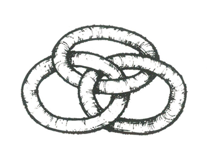
Hayvanlardan birisinin daha büyük bir canlı tarafından yenmesi halinde diğer ikisi serbest kalıyordu.
Dr. Klonefake’in asistanı aylardır dev bir mikroskopla toroitleri inceliyor, birbirlerine bağlanma çeşitlerini tespit edip sınıflandırmaya uğraşıyordu. Bir sabah, “İnanılır gibi değil!” diye haykırdı. “Yaklaşık elli toroitlik bir koloni… Kolye misali, çember kurarak bağlanmışlar ve içlerinden hiçbirinin gruptan kurtulma şansı yok… Ama içlerinden herhangi birisi yendiği anda hepsi birden serbest kalıyor!”
Dr. Klonefake mikroskobun başına geçip bakana kadar asistanına inanmadı. Ne dersiniz? Nasıl birbirlerine bağlanmıştı acaba bu toroitler?
PHİLO TATE’İN
POSTA PULLARI
Philo Tate Mars’taki ABD postanesi müdürlüğüne atanınca yaşam boyu hayalini kurduğu şeyi gerçekleştirme fırsatını nihayet yakaladığını düşündü. Neden, dedi kendi kendisine, her birinin ederi, 1’den başlayıp artık en yükseği hangisi mümkünse o pozitif tamsayıya kadar olacak toplam fiyatı tutturmak için üç tanesinden fazlasını gerektirmeyecek şekilde, dikkatle hesaplanmış bir pul serisi çıkarmayayım?
O dönemde Mars’ta herhangi bir kubbeden diğerine mektup yollamanın fiyatı bir dolardı. Bu tür bir posta hizmetinde kullanılacak pulların en ucuzunun bir dolar olması gereği açıktı. Diyelim ki sadece iki pulluk bir seri çıkartılsın: Tate’in şartlarını karşılayacak en uygun seçenekler 1 ve 3 olurdu. Bir, iki veya üç pulla 1’den 7’ye kadar herhangi bir toplamı tutturmanın yolu kolaylıkla görülebilir:
1 = 1 3 + 1 + 1 = 5
1 + 1 = 2 3 + 3 = 6
3 = 3 3 + 3 + 1 = 7
3 + 1 = 4
Problemi üç pulluk seriyle çözmek de zor değil. İşi görecek en iyi sayılar 1, 4 ve 5’tir. Bu ederlere sahip pullardan bir, iki veya üçüyle 1’den 15 dolara kadar her toplam tutturulabilir.
Philo Tate’in ilk serisiyse dört pulluktu. 1 dolarlık pulda
Bradbury ve Isaac Asimov’un portreleri basılıydı. Tate her pul için 1’den 24’e kadar tüm fiyatları üçten fazla pul kullanmadan tutturacak ederleri saptamayı başarmıştı.
Peki, Wells, Bradbury ve Asimov pullarının fiyatları nelerdi?
Bu arada, basılan ilk parti pul Washington’dan geldiğinde Tate, doğma büyüme Mars’lı genç asistanına, “Şunları bir an önce tüm şubelerimize dağıtalım,” dedi. Sonra aklına New York postanesinde ilk işe başladığı zamandan kalma bir laf geldi: “Eskiden Manhattan’da dediğimiz gibi,” dedi, “ne kar bizi yolumuzdan döndürsün ne de yağmur.”
Asistanı şaşkınlıkla yanıtladı: “Yağmur nedir?”
KAPTAN TITTLEBAUM’UN TESTİ
Ay ile Dünya arasına kurulan ilk uzay istasyonunun komutanı Kaptan Tittlebaum şahsen gayet açık bulduğu emir ve ara sıra yolladığı iç yazışmaların mürettebat tarafından anlaşılamama ve yerine getirilememesinden mustaripti. Emrinde çalışan herkesin basit emirleri yerine getirebilme becerilerini saptamak üzere aşağıdaki testi hazırladı. Bakalım siz uzay istasyonu mürettebatı olabilecek notu tutturabilecek misiniz?
Test
Önce tüm talimatları dikkatle okuyunuz. Belirtilmiş boşlukları bir kalemle doldurunuz. Verdiğiniz yanıtı hiçbir şekilde silmenize izin verilmemektedir. Ancak zaman sınırı yoktur; o yüzden acele etmeyiniz ve tüm talimatları harfi harfine izleyiniz.
Talimatlar:
1) Aşağıdaki altı kareye üç robot yasasını formüle eden kişinin soyadını yazınız.
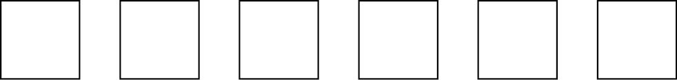
2) Aşağıdaki dokuz kareye güneş sisteminde bilinen gezegenlerin baş harflerini, güneşe en uzak olandan başlayarak en yakınına kadar yazınız.
3) Aşağıdaki satırdan öyle altı harfin üstünü karalayın ki çıkan sonuç gene 101 etsin.
İKİÇARPIELLİARTIBİR
4) Aşağıdaki kareye 4 Temmuz 2000 gününün hangi yüzyıla ait olduğunu yazınız.
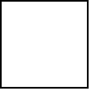
5) Aşağıdaki üçgende X doğrusunun uzunluğu nedir? Yandaki kareye yazınız.
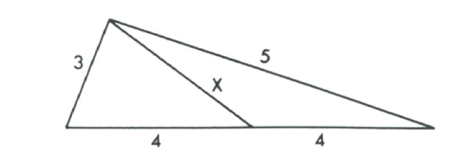
6) Aşağıdaki üç kareye 0 ve 1 haricinde öyle üç asal sayı yazınız ki oluşan üç haneli sayı, kullandığınız üç asal sayıya da bölünebilsin.
7) Öğlen ve gece yarısında akrep ve yelkovan üst üste gelirler. Peki, öğlenden gece yarısına kadar yelkovan akrebin üstünden kaç defa geçer? Yanıtı aşağıdaki kareye yazınız.
8) Aşağıdaki çizgiye “Talimatları daima dikkatle yerine getiririm” yazınız.
9) Bu soruya kadar, “önce” ile başlayıp “izleyiniz” ile biten paragraf dışındaki tüm talimatları görmezden geliniz. Aşağıya adınızı ve soyadınızı yazıp kâğıdınızı kaptana teslim ediniz.
CARTER
KRATERİ
Merkür’de bir krater var ve bu problem hayrına, kraterin ağzının (sınırının) kusursuz bir daire olduğunu varsayacağız. Kraterin adı, Merkür’e ilk ayak basan insandan, Başkan Jimmy Carter’ın torununun torunundan geliyor. Carter, adını taşıyacak bu kraterin yakınına inmişti. Krater ağzındaki iki gelişigüzel noktaya birer ikmal istasyonu kurmuştu. Carter sonunda dünyaya sağ salim dönmüştü ama uzay gemisinde çıkan bir yangında ikmal istasyonlarının yerlerini gösteren bilgiler yok olmuştu.
İki yıl sonra Smith ve Jones adlı iki astronot Carter Krateri’ne gönderildi. Krater ağzına yakın, gelişigüzel bir noktaya iniş yaptılar, yassı bir Merkür taşıyla yazı-tura atarak gelişigüzel (saat yönü veya saat yönünün aksi) bir yön seçtiler ve ağız boyunca en yakındaki ikmal istasyonuna doğru yürümeye koyuldular.
“İki istasyonun ve ağız üstündeki, yürümeye başladığımız noktanın tamamen gelişigüzel ve birbirlerinden bağımsız seçilmiş noktalar olduklarını varsayarsak,” dedi Bayan Jones, “ilk istasyona varana dek yürümemiz gerekecek mesafenin ne kadar olması beklenebilir?”
“Yani,” dedi Doktor Smith, “şu anda yaptığımızı pek çok defa tekrarlarsak uzun vadede alacağımız ortalama mesafe ne olur, onu mu diyorsunuz?”
“Kesinlikle,” dedi Bayan Jones. “Tabii her tekrarımızda iki ikmal istasyonu için başlangıçta yapılan gelişigüzel seçimleri de tekrarlamamız gerekiyor. Ben şöyle düşünüyorum: İkinci istasyon birinciden herhangi bir uzaklıkta, yani sıfırdan krater ağzının çevresinin toplam uzunluğuna kadar olan bir uzaklıkta olabilir. Bu durumda ortalama mesafe çember çevresinin yarısı olacaktır. Şimdi, bizim bu her iki yarım-çemberden birine inmiş olma şansımız diğerine inme şansımıza eşittir. Haliyle en yakın istasyona olan tahmini mesafemiz çevre uzunluğunun dörtte biri olur.”
“Makul görünüyor,” dedi istatistik uzmanı Doktor Smith. “Ama doğru çözüm yolu bu değil. Tahmini mesafe…”
Doktor Smith’in verdiği yanıt, krater çevresinin kaçta kaçıydı dersiniz?
PEMBE, MAVİ VE YEŞİL
Samanyolu’nda, bize yakın denebilecek bir gezegenin sakini insansı yaratıklar pembe, mavi ve yeşil olmak üzere üç ayrı ten rengindeki üç ırka ayrılmıştı. Dünyalılar gibi iki yönlü simetrik bu yaratıkların da ikişer kolu ve bacağıyla, gözler, kulaklar, ağız ve burun taşıyan birer kafası vardı.
Bir öğlen molasında üç ayrı ırktan üç profesör, üniversite yemekhanesinde birlikte yemek yiyorlardı.
“Ne şaşırtıcı değil mi?” dedi Profesör Pembe, “soyadlarımız Pembe, Mavi ve Yeşil ama hiçbirimizin soyadı ten rengine uymuyor.”
“Gerçekten ilginç bir tesadüf,” dedi diğer ikisinden birisi ve mavi elindeki bardağını hafifçe salladı.
“Yemekhane çok kalabalık bugün,” dedi Profesör Yeşil. “Ama yeşiller pek az görünüyor.”
Profesör Pembe etrafına bakındı. “Evet,” dedi. “Yemekte üçten fazla yeşil var ama kesinlikle bir düzineden fazlası yok.”
“A, aklıma ne geldi,” dedi grubun matematikçisi Profesör Mavi. “Belki Gardner fikrimi IASFM’deki köşesinde kullanır.”
“Neymiş bakalım?” dedi Profesör Pembe.
“Şimdi,” dedi Profesör Mavi. “Yemekhanede tam seksen pembe kol ve yarısı kadar da mavi kol sayıyorum. Pembe kişi sayısını mavilere ekler ve ardından tüm yeşillerin gözlerinin sayısıyla toplarsak 81 çıkıyor. Gardner’ın okurları kaç yeşilin yemek yediğini bulabilirler mi, merak ediyorum doğrusu.”
Profesör Yeşil problemi biraz düşündükten sonra gülmeye başladı. “Harika, dostum,” dedi “Yemekten sonra hemen uzay-altı radyosuyla Gardner’ı aramalısın. Tabii kol, bacak ve göz sayısına üçümüzünkilerin de dâhil olduğunu ve yemekhanede kolu, bacağı veya gözü eksik hiç kimsenin bulunmadığını da söylemelisin.”
Yemekhanede kaç yeşil vardı acaba?
PROFESÖR TINKER’IN ÜÇ ROBOTU
Stanford Üniversitesi Yapay Zekâ Laboratuarları başkanı Profesör Lyman Frank Tinker, yirmi birinci yüzyılın en ünlü robot tasarımcısıydı. Bir gün derse üç robot getirdi. Robotların üçü de dişiydi; üçü de son derece çekici, çırılçıplak ve birbirlerinin tıpkısıydı. Profesör robotları öğrencilerin karşısına yerleştirdiği üç sandalyeye oturttu.
“Bu kızlardan birisi,” dedi Profesör Tinker, “daima doğru söylemeye programlandı. Bir diğeriyse daima yalan söylemeye programlandı. Üçüncüsüyse, içindeki rastgeleleştirici sayesinde bazen doğru, bazen yalan söylüyor. Şimdi soru şu: Hangisinin yalancı, hangisinin doğrucu ve hangisinin bazen doğrucu, bazen yalancı olduğunu en az kaç soru sorarak bulabilirsiniz?”
Sınıfın ikinci en akıllı öğrencisi ayağa kalktı, solda oturan robota, “Yanında oturan kim?” dedi.
Robot yanıt verdi: “Doğrucu.”
Öğrenci bu sefer ortadaki robota baktı: “Sen kimsin?”
Robot yanıt verdi: “Ben bazen doğru, bazen yalan söyleyenim.”
Öğrenci sağdaki robota döndü: “Senin yanında oturan kim?”
Robot yanıt verdi: “Yalancı.”
Öğrenci bu üç soruyla hangi robotun hangisi olduğunu doğru bildi. Nasıl?
ANTİK OYUN
Sidney Bagson yirmi beşinci yüzyılın kadim matematik oyunları uzmanıydı. Bir zamanlar New Jersey adıyla bilinen bölgede bir Fransız arkeologun bulduğu, yirminci yüzyıldan kalma bilinmeyen bir oyunun haberini aldığında çok sevindi. Oyun tahtasındaki çizim şekilde görüldüğü gibiydi. Oyun, her nasıl olduysa, Kuzey Amerika’yı mahveden dünya savaşından kurtulmuştu…
Bagson hayatında böyle bir oyun görmemişti. Çabalıyor, uğraşıyor ama bir türlü makul kurallarını kestiremiyordu. Ama gizemi çözmenin bir yolu vardı: Bagson’un çalıştığı İsrail’deki Weizmann Bilim Enstitüsü’nde zamanda yolculuk yaparak geçmişte yaşananları izlemeyi sağlayan bir makine vardı. Ancak makine ve içine giren kişi, izlenen olaylara müdahale edemiyordu. İlkel bilimkurgu edebiyatında özenle incelenmiş mantıksal çelişkilere yol açtıklarından bu tür eylemlerin imkânsızlığı uzun süredir bilinen bir gerçekti.
Weizmann Enstitüsü Bagson’a makineyi kullanarak kadim oyunun çıkarıldığı kazının yapıldığı New Jersey’e gitme izni verdi. Hassas kuark tarihlendirmeleri oyunun 1987 sonbaharında yapıldığını göstermişti.
Bagson makineye girdi, ayarlamaları yaptı ve çok geçmeden kendisini bir kızla bir oğlan çocuğunun esrarengiz oyunu oynayışlarını seyrederken buldu. Tabii çocuklar Bagson’un varlığından habersizdi. Bir süre izledikten sonra Bagson oyunun kurallarını çözmeyi başardı.
1. Oyuna x ve y noktalarına konan biri kırmızı, diğeri mavi iki taşla başlanıyordu. Her oyuncu sırayla kendi taşını ilerletiyordu.
2. Her hamlede oyuncu 1, 2 veya 3 nokta ilerleyebiliyordu. Nokta atlamak yoktu.
3. Taşlar karşı karşıya geldiklerinde, yani yapacak hamle kalmadığında, taşı çemberin içinde kalan oyuncu oyunu kazanıyordu.
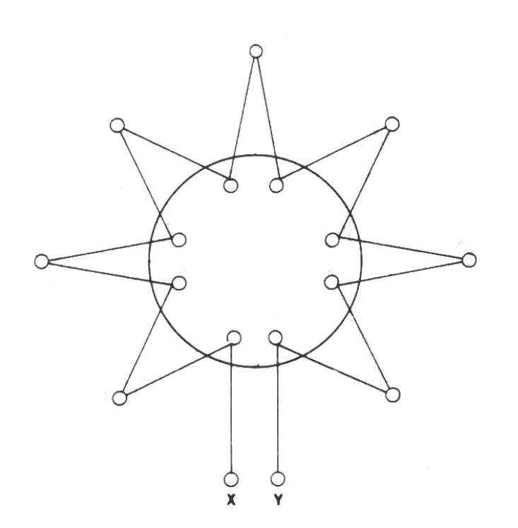
Bagson oyunun, matematikçilerin “nim-gibi” dediği oyunlardan olduğunu derhal kavramıştı. Oyun, iki taş karşılaştığında biri mutlaka çember içinde kalacağından asla berabere bitemiyordu. Bu durumda oyunculardan birisinin doğru oynaması, kesinlikle kazanması demekti.
Peki, hangi oyuncu her seferinde kazanabilir ve kazanan, hangi stratejiyi uygulamalıdır?
BEDFORD
SOKAĞI’NDAKİ DÜKKAN
New York’un Greenwich Village semtindeki Bedford Sokağı’nda Chumley’nin lokantasının gizli kapısını ararken daha önce dikkatimi hiç çekmemiş, ilginç, ufacık bir dükkâna rastladım. Dükkânın genişliği iki metre bile değildi; kirli vitrinine, üstünde kargacık burgacık bir yazıyla “Eski bilimkurgu ve Fantezi Dergileri” yazılı bir kâğıt parçası yapıştırılmıştı.
İttiğim kapı gıcırtıyla açıldı. Yaşlı, minik orman cinlerine benzeyen bir adam tezgâhın ardına oturmuş, horluyordu.
“Acaba,” dedim yüksek sesle, “Tuhaf Öyküler’in 1950 öncesi sayıları var mı elinizde?”
İki çapaklı göz yavaşça açıldı. İhtiyar kalemiyle kulağını kaşırken gülümsedi. “Elbette var.”
Yavaşça kalktı ve gıcırdayan bir merdivene tırmanarak en üst raftaki dergi tomarını indirdi. Dergiler gayet iyi durumda görünüyorlardı; en eskisi 1926, en yenisi 1949 tarihliydi ve hiçbir sayıdan iki tane yoktu.
“En yakın tarihli sayı bir dolar,” dedi ihtiyar. “Bir önceki üç, ondan önceki beş… En eskiye doğru böyle ardışık tek sayılar halinde devam ediyor fiyatlar. Arada epey eksik sayı var gerçi… Ama alacaksanız hepsini almak durumundasınız.”
Dergileri saydım ve bir zarfın arkasında hesap yaptım.
“Param yetmiyor.”
“Bu durumda,” dedi ihtiyar, “fiyatı başka türlü belirlemenize izin vereceğim. Dergileri iki gruba, istediğiniz şekilde ayırın ve her gruba aynı sistemle ödeme yapın. Yani birincisi bir, ikincisi üç, üçüncüsü beş dolar, vesaire. Çek kabul ederim ama toplamı yüz doların katı çıkarmak durumundasınız.”
İhtiyarın kim olduğumu bildiğinden kuşkuluydum ama çılgın ödeme planı sayılı bulmacalara merakıma fena hitap etmişti. Dergi yığınını toplam fiyatı olabildiğince düşük tutacak şekilde böldüm. Fiyata yüzün katlarından birine denk gelecek miktarı ekleyip çeki yazdım. İhtiyar ehliyetimi ve kredi kartlarımı kontrol ettikten sonra dergileri paketledi; paketi aldığım gibi sokağın köşesine park ettiğim arabama götürdüm.
Karımla akşam yemeğimizi yerken –geç kalmama kızmıştı– yaptığım tuhaf ve kârlı alışverişi anlattım.
“Ne kâr ama!” dedi. “Ne kadar hibe ettin peki? Yani yüzün katını tutturmak için kaç para eklemen gerekti?”
“Şöyle söyleyeyim,” dedim, “dergilerden biri ve sadece biri için yaşından beş kat fazla dolar ödedim.”
“Dediğine bakıp hesap yapacağımı sanıyorsan,” dedi eşim, “iyice keçileri kaçırdın demektir.”
Sahi, ne kadar fazladan para vermiştim ihtiyara?
TANYA
TOPOLOJİYE DALIYOR
Simitsi şekli yüzünden Bagel adı verilmiş uzay gemisi, 7 numaralı bulmacamızda bahsedilen görevinden dönüyordu.
Bagel’ın bilgisayar bilimleri mürettebatının başı Ronald Couth’un on yaşındaki kızı Tanya, “Baba,” dedi, “topoloji ne demek?”
“Kabaca,” dedi Couth, “bir yapı sürekli bir şekilde yamultulduğunda aynı kalan özelliklerinin incelenmesi diyebiliriz. Ama dur, sana eski bulmacalardan birini göstereyim. Daha iyi anlarsın.”
Couth bir tebeşir buldu ve duvara aşağıdaki şekli çizdi.
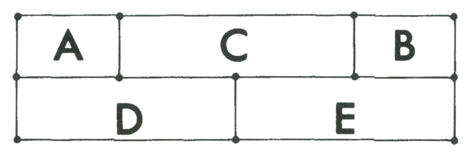
“Şimdi, problem şu,” dedi Couth. “Hiç elini kaldırmadan, istediğin yerden başlatıp istediğin yerde bitireceğin ve on altı doğru parçasının her birini bir defa kesecek bir çizgi çizeceksin. Mesela şöyle bir şey yapabilirsin.” Couth aşağıdaki çizgiyi çizdi.
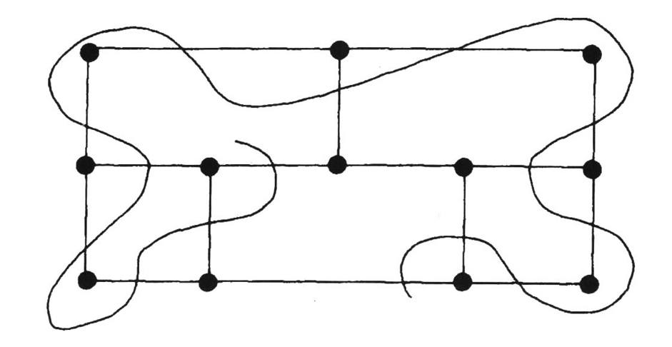
Tanya yüzünü astı. “Çözdün ama işte!”
“Yo, yo,” dedi babası, “dikkatli bak şuna… Çizgimde doğru parçalarından birini atladığımı göreceksin. Bunun topolojik bir bulmaca olmasının sebebi şu: diyelim ki bu şekli bir lastik parçasının üstüne çizdin. Lastiği istediğin gibi eğip bükebilirsin. Ama bulmaca değişmeyecektir. Mesela şekli şöyle çarpıtabiliriz:
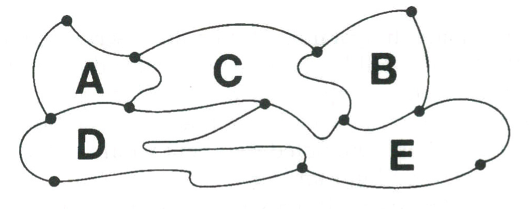
“Şekil eğilip bükülebildiğinden bulmacanın çözülebilip çözülemeyeceği sorusu topolojiktir. Aslında bu bulmacayı, çizgini köşelerden birinden geçirmek veya doğru parçalarının birinin üstünden çekmek türü hilelere başvurmadan çözemezsin.”
“İmkânsızsa,” dedi Tanya, “niye uğraşıp zaman harcayayım?”
“Çünkü,” dedi babası, “çözülemeyeceğini kanıtlayabilir misin, görmek istiyorum. Başarırsan, temel topolojide bazı teoremleri nasıl kanıtlayabileceğini öğreneceksin.”
Bu bulmacanın çözümü olmadığını kanıtlayabilir misiniz?
BLABBAGE’IN ORACLE’ININ PATLAMASI
İngiltere’nin bir numaralı yapay zekâ uzmanı Profesör Charles Blabbage nihayet Yerel Olaylarla İlgili Her Şeyi Bilen İleri Rasyonel Hesap Makinesi ORACLE’ın yapımını tamamlamıştı. Bilgisayar öyle güçlüydü ki bir saatlik zaman dilimi ve kendi konsolunun on metre çaplı çevresi dâhilindeki her olayı yüzde yüz kesinlikle (Blabbage ısrarla iddia ediyordu) öngörebiliyordu.
Makine şöyle çalışıyordu: Birisi ORACLE’a gelecek bir saat boyunca ve belli bir alan içinde olabilecek veya olamayacak herhangi bir olayı tarif ediyor, bilgisayar olayın olacağını öngörürse “evet” anlamında yeşil, aksi durumdaysa “hayır” için kırmızı ışığını yakıyordu.
Profesör Blabbage, söz konusu bir saat dolana dek iki ışığın gizlenmesi gerektiğini söylüyordu. Aksi durumda herhangi birisi kolaylıkla öngörüyü yanlış çıkaracak herhangi bir şey yapabilirdi. Örneğin, diyelim ki bilgisayar, “Laboratuarın batı duvarına bir hamamböceği tırmanacak” öngörüsüne “evet” demiş olsun. Bu durumda yeşil ışığı gören herhangi birisi duvarın yanına gidip olayın gerçekleşmemesini sağlayabilirdi.
Modern mantık ve kümeler kuramında doktora sahibi, kızıl saçlı, çekici Dr. Ada Loveface, Dr. Blabbage’ın asistanıydı. ORACLE’ın güçlerini üniversiteyi ziyarete gelen seçkin biliminsanlarından, askeri yöneticilerden ve hükümet üyelerinden oluşan gruba göstereceği gün doktorun yanına geldi ve şöyle dedi:
“Çok üzgünüm profesör ama ORACLE’ın her seferinde başarıya ulaşması mümkün değil. Bilgisayarın laboratuarda bir saat içinde olup olmayacağını mantık yoluyla kesinlikle öngöremeyeceği bir olay var.”
Blabbage, ne olduğunu söyleyene kadar Ada’ya inanmadı. Söylediğindeyse fenalaştı ve hastaneye kaldırıldı.
Neydi Dr. Loveface’in bahsettiği bu olay?
DRAKULA MARTİNİ HAZIRLIYOR
“Kokteyl saati, tatlım,” dedi Kont Drakula karısına. “Her zamankinden mi istersin?”
“Her zamankinden,” dedi Kontes Drakula.
Kont, içki dolabından içinde bir çeyrek votka bulunan bir şişe ile bir pint5 insan kanı dolu, daha ufak bir şişe çıkardı. Votka şişesine biraz kan damlattı, şişeyi güzelce çalkaladı ve aynı miktarda karışımı tekrar küçük şişeye doldurdu. Haliyle büyük şişede gene bir çeyrek, küçüğündeyse bir pint sıvı oldu.
5) 1 pint: 0,473 litre. (ç.n.)
Kontes Drakula sırtı eşine dönük oturuyordu ama büyük salon aynasından yaptıklarını izliyordu. Kont, vampir martinisi için standart Transilvanya usulünü uyguluyordu.
Diyelim ki votka ile insan kanı karıştırıldıklarında ikisinin de hacmi değişmiyor: yukarıda anlattığımız iki işlemin sonunda kan şişesinde, votka şişesindeki kandan daha mı fazla votka olur? Yoksa daha mı az? Yoksa eşit midirler?
Bu bulmacanın birinde şarap, diğerinde su bulunan iki eşit bardakta olan şeklini duymuşsunuzdur belki. Ama bizimkinde iki şişenin içindekilerin miktarı eşit değil; ayrıca aktarılıp geri konan sıvının miktarı da verilmiyor.
TAHRİFATÇI
PHILBERT’IN SİLİNİŞİ
Yirmi üçüncü yüzyılın ortalarına doğru uygar dünyanın büyük bölümünde idam cezasının yerini “siliniş” adı verilen yeni bir ceza almıştı. Bu cezada hükümlünün kafası, “unutulma kutusu” adı verilen elektronik bir makineye sokuluyor, doğumdan altı ay sonrasından itibaren yaşanan her şeyin anıları birkaç dakika içinde siliniyordu. Tabii bu işlem sonunda suçlu bebekliğine dönüyordu; hiç kimsenin suçlu doğmadığı, her şeyin deneyimlerle edinildiği epey zaman önce saptanmıştı. Silinmiş “bebek” birkaç yıl içinde yavaşça yetişkinliğe erişiyordu. Siliniş kişiyi, önceki haline dair hiçbir anıya sahip olmayan farklı bir kimliğe dönüştürdüğünden söz konusu ceza, idam cezası kadar korku yaratıyordu.
Hukuk alanındaki bir başka büyük değişiklikse tüm yargıçların ve bazı avukatların yerini robotların almış olmasıydı. Yasaların sayısı ve karmaşıklıkları öyle artmıştı ki tüm ayrıntıları yalnız bilgisayarlar hatırlayabiliyordu. Robot yargıçlar sadece bilge ve mantıklı kararlar almak üzere programlanıyordu; bir robot yargıcın yalan söylemesi mümkün değildi. Beyninde bir devre arızalanır ve yanlış bir beyanatta bulunursa hükümleri geçersiz ilan ediliyor ve mahkeme yenileniyordu.
Yirmi üçüncü yüzyılda cinayet ve tecavüzle aynı ölçüde ağır kabul edilen en feci suç, bir bilimsel deneyde sahte veri girmek anlamına gelen “tahrifat” suçuydu. Bilimsel yöntemin kutsallığına yönelik saygı öyle boyutlara ulaşmıştı ki tahrifattan suçlu bulunan herkes doğrudan siliniş cezasına çarptırılıyordu.
Philbert X1729B, Oklahoma’daki Ağız Sağlığı Araştırma Laboratuarları’nda yürüttüğü bir deneyde veri tahrifatı yapmaktan tutuklanmıştı. Robot avukat tutacak parası yoktu Philbert’ın. Pek becerikli denemeyecek insan avukatıysa davayı kaybetti. Hüküm anı geldiğinde robot yargıç şunları söyledi:
“Pazartesi’den başlamak üzere önümüzdeki haftanın altı gününden birinde, saat 15.00’da silineceksin. Silineceğin, siliniş günü sabah 10.00’da bildirilecek.”
“Ama sayın yargıç,” dedi Philbert, “günü şimdi söyleyemez misiniz?”
“Hayır. Gün henüz belirlenmedi. Ancak önümüzdeki hafta Pazartesi, Salı, Çarşamba, Perşembe, Cuma veya Cumartesi silineceksin, orası kesin. Siliniş günü sana bildirilene kadar hangi gün silineceğini bilmeyeceksin.”
“Teşekkürler, sayın yargıç.”
Günün son mahkemesiydi; yargıç ertesi günün ilk mahkemesine kadar kendisini kapamak üzere koltukaltındaki düğmeye bastı.
Philbert, hücresinde yargıcın söylediklerini düşünmeye başladı. Birden coşkuyla ayağa fırladı. Yargıcı yalancı çıkarmadan silinmesi mümkün değildi! Bu durumda yeniden yargılanma hakkı kazanacaktı. Belki karısıyla dostları iyi bir robot avukat tutacak parayı toplayabilirlerdi o zaman…
Neydi Philbert’ın aklına gelen dersiniz?
CROCK İLE WITSON ŞİFRE ÇÖZÜYOR
Harvard Üniversitesi’nden bakteriyolog Dr. Frank Crock, 2019 yılında olağan dışı bir bakteriyofaj (bakterileri yok edebilen virüs) keşfetti.
Dr. Crock, meslektaşı Dr. Hugh Witson’a, “İnanılır gibi değil,” dedi. “Bu virüsteki DNA mesajı hayatımda gördüklerimin en basit ve en tuhafı… Tek yaptığı bir düzine üçlü sekansı tekrarlamaktan ibaret.”
Çifte sarmaldaki tüm DNA bilgisi adenin, sitozin, guanin ve timin adlı dört bazın sekansıyla verilir. Bu bazlar baş harfleri (A,C, G, T) kullanılarak üç harfli “sözcükler” halinde gruplanırlar. Yeni bulunan bakteriyofajda aşağıdaki otuz altı harflik sekansın yirmi tekrarından oluşan bir DNA “mesajı” vardı:
GTC ATG TCC CTC TCA CTC TCC CTC ACG CTC TGG AGA
“Kesinlikle yapay görünüyor,” dedi Crock. “1979’da iki Japon biliminsanı dünyamızdaki bazı virüslerin yapay ve başka bir gezegenden buraya iletişim amacıyla yollanmış şifreler olabileceklerini öne sürmüştü. Virüs dünyaya yayılana dek hızla çoğalacağından böylesinin verimli bir iletişim yöntemi olacağını söylemişlerdi. Yanlış anımsamıyorsam o iki Japon, birçok basit virüsün DNA sekanslarını inceleyip iletişim ipuçları aramıştı. Bir şey bulamamışlardı gerçi. Ama bu virüsün burada evrim geçirmiş olması imkânsız. Yapay olmalı…”
Crock ile Witson, dünya dışı zekâ kaynaklı iletişime yakın bir şey bulabilmek için otuz altı harflik sekansı incelemeye koyuldular. Kısa süre içinde harflerden birinin tesadüf olamayacak, tanıdık bir tamsayılar sekansını gösterdiğini fark ettiler. Neydi buldukları sekans?
TİTAN’DAKİ DEV SİMGE
Bagel’ın kaptanı Larc Snaag, devasa gemisiyle Titan’a yaklaşıyordu. Satürn’ün, Merkür’den büyük, neredeyse Mars’la aynı ebattaki uydusu Titan’a ilk defa insanlı bir araştırma aracı gidiyordu.
İkinci kaptan birden, “Isaac aşkına!” diye bağırdı. “Şuna bakın!”
Titan’ın gazlarla kaplı atmosferinde parıldayan yeşil çizgilerle yapılmış geometrik bir şekil açık seçik görülüyordu. Şekil, bir eşkenar üçgenin içindeki bir dairenin içindeki bir diğer eşkenar üçgenden oluşuyordu.
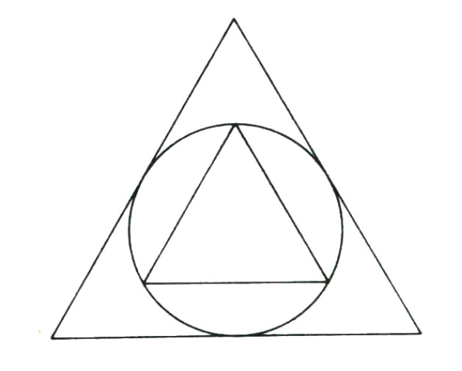
“Bu… Dev gibi!” dedi kaptan. “Ne olabilir acaba?”
“Dinsel bir simgedir belki,” dedi ikinci kaptan. “Ya da biz uzaylı konuklara bu lanet gaz bulutları altında bir uygarlık bulunduğunu haber veriyorlardır…”
Yemek saatinde Bagel’ın tüm mürettebatı haliyle bu gizemli simgeden bahsetti. Laf arasında birisi, geminin en iyi matematikçisi Ronald Couth’tan iki üçgenin alanları arasındaki oranı hesaplamasını istedi.
“Zor olmasa gerek,” dedi Couth ve peçetesi üzerinde hesaba girişti. “Dairenin yarıçapını 1 kabul eder, üçgeni ona göre kurabiliriz. O zaman Pisagor teoremini uygularız ve–”
Couth’un, konuşmaları sırıtarak izleyen on yaşındaki zeki kızı Tanya, “Ve” dedi, “büyük üçgenin küçükten tam dört kat büyük olduğunu bulursunuz.”
Couth ikinci derece denklemi karalarken, “Belki,” dedi. Dört dakika sonra şaşkınlıkla kızına baktı. “Haklıymışsın! Ama nasıl böyle çabucak çözebildin?”
“Kolay,” dedi Tanya. “Fark ettim ki…”
Tanya’ya “Aha!” dedirtip sonucu hemen bulmasını sağlayan neydi sizce?
PROFESÖR CRACKER’IN ANTİ-TELEFONU
Charles Blabbage’ın öngörü makinesinin patlamasının ardından (bkz. Bulmaca 18) istifa eden Dr. Ada Loveface, Londra Barkback Üniversitesi’nde görevli ünlü astrofizikçi Alexander Graham Cracker’ın yanında çalışmaya başlamıştı.
Profesör Cracker’ın projesi, yıldızlararası mesafelere ışık hızını aşan hızlarda sinyaller yollayabilecek (en azından teoride) bir makine tasarlamaktı. Yirminci yüzyılda fizikçi Gerald Feinberg ve diğer biliminsanları, görelilik teorisinin her daim ışıktan hızlı giden parçacıkların varlığını onayladığını bulmuşlardı. Feinberg bu parçacıklara, Yunanca ‘hızlı’ anlamına gelen “Takyon” adını vermişti.
Sıradan parçacıklar (“tardiyonlar”) nasıl asla ışık hızına çıkamıyorsa, takyonlar da ışık hızından yavaş gidemiyordu. Takyonlar her daim hareket halinde olduklarından durgun kütleleri yoktu. Bu durum Feinberg’e durgun kütlelerini sanal sayılarla belirtme olanağı sağlamıştı. Profesör Cracker altı aylık yoğun araştırmalar sonucunda “Takyonik Anti-Telefon” adını verdiği bir makine tasarladı. Takyonların varlığı henüz kanıtlanmamıştı ama eğer varlarsa Cracker’ın anti-telefonu, sinyalleri taşıyabilecek bir takyon ışını yaratabilecekti.
“Takyonların ışıktan hızlı hareket etmeleri,” dedi Dr. Loveface, “zamanda geri gittikleri anlamına gelmez mi?”
“Elbette,” dedi Profesör Cracker. “Einstein’ın denklemleri bunu garanti ediyor. Zaten anti-telefonumun müthişliği de bundan geliyor. Andromeda Galaksi’sindeki uzaylılara, göndermemizden günler önce ulaşabilecek bir mesaj yollayabiliriz!”
“Ama bu durumda,” dedi Dr. Loveface, “anti-telefonunuz çalışmıyor demektir.”
Dr. Loveface bu sözünün üzerine, mantıksal açıklamasını da getirince Profesör Cracker projeyi anında bıraktı. Neydi peki sunduğu kanıt?
AY’DA TATİL
New Jerseyli tesisatçı Edgar D. Twitchell, üç haftalık tatili için Ay’a gidiyordu. Bindiği roket kendi ekseni etrafında dönerek yapay yerçekimi yaratamayacak kadar ufak olduğundan Twitchell, gemi hızlandıkça ağırlığının aynı hızla azaldığı hissine kapıldı. Roket dünyanın güçlü çekim gücünün Ay’ın daha zayıf çekim gücüyle tam dengelendiği noktaya geldiğinde, geminin içine sıfır g egemen oldu. Tüm yolcular kemerleri bağlı oturuyordu; Twitchell buna rağmen parmaklarını oynatıp purosunu tüttürerek akış duygusunun tadını çıkardı.
Gemi saatler sonra Ay’daki ABD kolonisini barındıran devasa kubbelerden birinin yanına yavaşça indi. Twitchell, kalın camlı penceresinden ilk Ay manzarasını gördü; sırtlarına minik oksijen tankları bağlanmış birkaç martı kubbelerin etrafında uçuyor, kubbenin tepesinde bir Amerikan bayrağı meltemde hafifçe sallanıyordu.
Gündüz olmasına rağmen gökyüzü kapkara ve kırpışan yıldızlarla doluydu. Ufukta Dünya, incecik mavi hilaliyle “doğuyordu”; hilalin iki ucu arasında pek çok soluk yıldız parıldıyordu. Twitchell’ın daha sonra öğreneceği üzere, Ay, Dünya etrafındaki her bir turunda kendi ekseni etrafında da bir defa dönüyordu. Bir dönüş yaklaşık yirmi sekiz gün sürdüğünden Dünya’nın Ay üzerinde doğup batması ön dört gün kadar sürüyordu.
Tatilinin altıncı gününde Twitchell’a uzay giysisi giyerek kubbenin içine inşa edildiği kraterin etrafında dolaşma izni verildi. Twitchell biraz dolaştıktan sonra bumeranglarla oynayan pembe uzay giysili bir grup çocuğa rastladı. Kızlardan birisinin fırlattığı bumerang geniş bir daire çizerek üzerine geldiğinde bizim tesisatçı eğilmek zorunda kaldı. Twitchell başlığını ıskalayarak geçen bumerangın arkadaki bir kayaya gürültüyle çarpışını duydu. Dönüp baktığındaysa bumerangın kayanın kapkaranlık gölgesinde yittiğini gördü. Ay’da ışığın atmosferik dağılışı söz konusu olmadığından gölgedeki nesneler el feneri kullanmadan görülemiyordu.
Twitchell yürüyüşüne güneş henüz alçaktayken başlamıştı. Şimdiyse batmak üzereydi. Ay gününü geceden ayıran keskin hat (“terminatör”), gri arazide saatte 40 mil hızla kayarak parıltılı kubbeye doğru ilerliyordu. Bu hız, Twitchell’ın var gücüyle hoplayarak geri dönüş hızından çok daha fazlaydı. Bu sırada yukarıdan geçen kuyruğu alevli bir göktaşı Ay yüzeyine çarptı.
Twitchell odasına geri döndüğünde öyle yorulmuştu ki üstünü çıkaramadan yatağında uyuyakaldı ve doğan güneş odasını parlak ışıklarıyla doldurana kadar uyanmadı.
Yukarıdaki anlatıda kaç bilimsel yanlış bulabilirsiniz acaba?
TİTAN’DAN TUHAF SAYILAR GELİYOR
Bagel’ın mürettebatı, Titan’ın turuncu bulutları altında parıldayan geometrik simgeyi (bkz. Bulmaca 22) enine boyuna incelemişti. Sonuç açıktı: Satürn’ün en büyük uydusunda zekâ sahibi yaşam vardı!
Kaptan Snaag, “Eğer Titanlılar böylesi devasa bir simgeyi yapacak zahmete girdilerse,” dedi, “bunun nedeni güneş sistemindeki diğer akıllı canlılara burada olduklarını bildirmek istemeleridir herhalde… Eğer durum buysa, kesinlikle radyo mesajı da yayınlıyorlardır.”
Geminin baş radyocusu Frank Blake’e derhal tüm frekansları taraması emredildi. Birkaç saat sonra radyo uzmanı müthiş bir heyecanla, şifreli bir mesajı gayet açık seçik saptadığını bildirdi.
“Bir dizi bipten oluşuyor mesaj,” dedi Blake. “Fasılalı bipler… İlginç bir sayı sekansı yolluyorlar.”
“Asal sayılar mı?” dedi Snaag. “Ya da pi veya ikinin karekökü falan mı?”
Blake, “Yok, öyle basit bir şey değil,” dedi ve kaptanına, aşağıdaki sekansın yazdığı bir sayfa uzattı:
1 37 12 18 26 35 45 56 69 83
98…
“Sekans yüz sayıya kadar devam ediyor,” dedi Blake. “Ardından tekrar başlıyor. VOZ (Geminin bilgisayarı) incelemeye başladı bile.”
Çok geçmeden geminin bilgisayar subayı Ronald Couth kaptanın odasına daldı. “Harika! VOZ sekansın 1970’lerde Douglas R. Hofstadter tarafından keşfedildiğini söylüyor. Hofstadter bu sekansa “garip sayılar” adını vermiş. 1979’da yazdığı klasik kitabı Gödel, Escher, Bach: Bir Ebedi Gökçe Belik’in 73. sayfasında sekansı yayınlamış.”
“Şahane kitaptı,” dedi Snaag. “Üniversitedeyken okumuştum. Sekansı hatırlamıyorum ama. Nasıl oluşuyormuş?”
Couth ilk altı sayıyı yazdı, ardından her sayı çiftinin altına iki sayı arasındaki farkı ekledi:
1 3 7 12 18 26…
2 4 5 6 8…
“Sekans ile sekansın,” dedi, “ilk farklar sırası, tüm sayma sayılarını kapsıyor ve her sayı sadece bir defa çıkıyor. Her iki sıradaki sayılarla her iki sıranın başlangıç sayılarını artan düzende varsayarsak, eşi benzeri yok bunun. Oluşturma yöntemi basit. 1’le başlıyorsun. Ardından gelecek sayı 2 olamaz çünkü bu durumda alt sıradaki 2’yle birlikte iki tane 2 olur. O yüzden 3 olmalı. Onun ardından 4 gelemez çünkü gelirse alttaki sıraya 1, 2 ve 3 konur; o yüzden 7 gelmek durumunda. Böyle gidiyor. Üst sıradaki sayılar alttakilerden çok daha hızla artıyor gerçi ama sonuçta iki sıranın tüm pozitif tamsayıları içereceği açık.”
“Acaba,” dedi Snaag, “genelleştirilebilir mi bu sekans? Mesela öyle bir sayı var mıdır ki ilk ve ikinci fark sekanslarıyla birlikte bu üç sekans her sayma sayısını hiç tekrar olmadan tarasın?”
“Yok,” dedi Couth. “Ama akıllıca bir soru sordunuz, kaptan. VOZ, Ohio’daki Bell Laboratuarları’ndan Karl Fox’un 1980 yılında ‘çifte-garip’ sayı sekansı bulunmadığını kanıtladığını söylüyor.”
“Bell Laboratuarları mı?” dedi Snaag. “Neymiş o?”
“Bir iletişim aleti üretiyorlarmış,” dedi Couth. “Öyle berbat bir şeymiş ki iletişim kabloları bütün ülkeyi devasa bir örümcek ağı misali sarmış o dönemde…”
Fox’un ispatını yeniden yapabilir misiniz?
ŞEYTAN
LAS VEGAS’TA
Şeytan’ın paranormal güçleri, Cennet’ten kovuluşundan bu yana insanların bu güçlere inancındaki artış ve azalmalara göre değişiyordu. Bahis konusu inançlar azaldıkça Şeytan’ın şeytani işlerini yapma gücü de azalıyordu. Yirmi ikinci yüzyılın ortalarında insanların varlığına inancı öyle azalmıştı ki Şeytan’ın sadece yirmi dört saat sürebilen lanetlerden ötesine gücü kalmamıştı artık.
Cehennem’de sonsuz can sıkıntısından kurtulmak isteyen Şeytan, sonunda çareyi fani kılığına bürünüp Las Vegas’taki kumarhaneleri ziyaret etmekte bulmuştu. Kumarı mı yoksa fahişeleri mi daha çok seviyordu, orasını anlamak zordu. Bu seferkinde Fort Worth’ten uzun boylu bir petrolcü kılığına bürünmüştü.
Rulet masasının yanında oturan tıknaz bir adama yanaşarak, “Bahse girmek ister misin, arkadaşım?” dedi.
“Bahsine bağlı.”
“Tabii,” dedi Şeytan. “Aklımda şöyle bir şey var: kırmızı ve siyahlardan kafana göre bir üçlü, mesela kırmızı-kırmızı-siyah veya siyah-kırmızı-siyah seçiyorsun; ben de bir başkasını. Rulette hangimizin üçlemesi önce gelirse o kazanıyor. Sıfır ve çifte sıfırları saymıyoruz. Dörde beş veriyorum sana; yani ben beş ozmuf koyuyorum [1 ozmuf, 1980’lerin 25 dolarına eşit], sense dört… Her yeni bahiste ilk üçlüyü seçme hakkı da senin.”
“Hım,” dedi adam. “Her turda siyahın gelme olasılığı ½… Kırmızının da… Bu durumda herhangi bir üçlü için ½ kere ½ kere ½, yani 1/8 olabilirlik söz konusu. Eşit… İkimizin de avantajı olmuyor.”
“Aynen,” dedi Şeytan gülümseyerek. “Bir de sana beşe dört oran veriyorum.”
“Gayet iyi görünüyor teklif,” dedi adam.
Peki, bahiste şans kimden yanaydı? Adamdan mı, Şeytan’dan mı? Adamın her bahiste hangi üçlüyü seçeceği bir şeyi değiştirir miydi?
HAYDİ MEKİĞE
Pennsylvania’nın Mars ilçesinde oturuyorsunuz ama Ay’daki bir peynir fabrikasında çalışıyorsunuz. Her Pazartesi sabahı helikopterle Pittsburgh’a geçiyor, orada iyon-motorlu bir mekikle Ay’a uçuyor ve ertesi Cuma Dünya’ya dönüyorsunuz.
Yılbaşı ve Asimov Bayramı türü tatiller dışında Pittsburgh’-tan gece-gündüz her çift saat başı (12, 2, 4, 6, 8, 10…) bir mekik kalkıyor. Yine her çift saatte Ay’dan Dünya’ya bir mekik yola çıkıyor. Mekikler her iki yönde de birbirlerinden sabit uzaklıkta kalıyorlar ve hızları her birinin varış noktalarına tek saatlerde (1, 3, 5, 7…) varacakları şekilde ayarlanıyor. Aşağıdaki resimde Dünya’dan Ay’a ve aksi yönde yolculuk yapan eşit sayıda mekik görülüyor.
Bir gün Ay’a giderken kapkara gökyüzünde alevli bir göktaşı misali atmosfere giren, dünyaya giden bir geminin kırmızı iskele ışığını görüyorsunuz.
Yanınızda oturan genç hanım, “Gelen gemileri sayıyordum,” diyor. “Kalkıştan bu yana yanından geçtiğimiz yedinci gemiydi bu.”
Peki, hangi gemidesiniz (A’dan G’ye)? Yanıtı, masa üstünde modelleme yapmadan, kafadan bulmaya çalışın.
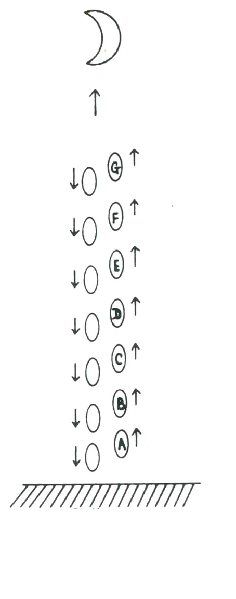
AY Yeryüzü
GARDNER’IN DERGİSİNİN ACAYİP ÖYKÜSÜ
H. G. Wells’in yazdığı bilimkurgu öykülerinden en az bilinenlerden biri, “Brownlow’un Gazetesinin Acayip Öyküsü”dür. 1932 Nisan’ında Ladies’ Home Journal’da yayınlanmış ve başka hiçbir kitaba alınmamıştır.
Tuhaf bir zaman olayı yüzünden 10 Kasım 1971 tarihli bir gazete, Brownlow’un kapısına bırakılır. Öyküde esasen gazetedeki haberler anlatılır. Wells birkaç şanslı tahminde (doğum oranlarının düşmesi, edebiyatta psikolojiye ağırlık verilmesi, yer yüzeyinin altındaki ısıdan yararlanma girişimleri, bilimsel haberlere daha fazla yer verilmesi) bulunmuştu ama tutturamadıkları bu başarılarını (İngilizcenin basitleşmesi, dünya hükümeti, ekonomi sayfalarının ortadan kalkması, on üç aylık takvim, gorillerin soyunun tükenmesi, vesaire) dengeliyordu.
Geçen Ocak’ta Brownlow’un başına gelene benzer bir şey yaşadım. Scientific American’ın Ocak 1980 sayısı diye beklediğim nüsha posta kutuma bırakılmıştı. İnanılmaz tarafı, üzerinde 2556 Ocak yazmasıydı! Baskısı tuhaftı ve dili epey zor anlaşılıyordu ama resimler müthişti. Hepsi renkli ve üç boyutluydu; pek çoğu sayfayı oynatınca hareket ediyordu.
Derhal matematiksel oyunlar köşesini açtım. Ne olduğu gayet açık Nitram Rendrag takma adlı birisi tarafından hazırlanmış köşe tümüyle yeni yılla ilgili sayı bulmacalarına ayrılmıştı. Aşağıda anlayabildiklerimden altısı var:
1) 2556’daki rakamları istediğiniz sırayla dizin ve sayıyı hesap makinenize girin. Herhangi bir rakamla çarpın, 100 ekleyin ve üçe bölün. Bölümde daima virgül sonrası 1/3 oranı çıkacaktır. Neden?
2) Aşağıdaki dokuz kareye 1’den 9’a kadar rakamları, her birini bir defa kullanmak şartıyla yazınız. Rakamları, sağlarındaki toplamları verecek şekilde yerleştirin ve üç haneli üç sayının toplamı 2556 etsin. Kullanabileceğiniz tek düzenleme var.
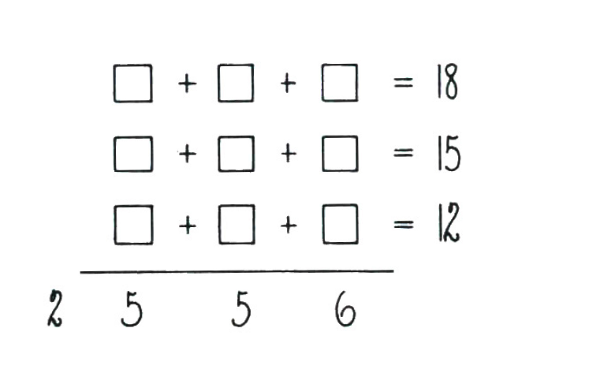
3) Aşağıdaki rakam sekansındaki rakamların arasına artı veya eksi ya da hiçbir şey koymayın.
1 2 3 4 5 6 7 8 9
Aralarına artı veya eksi koymadığınız rakamlar birleşip daha büyük sayılar oluşturacak. Örneğin: 123 – 45 – 67 + 89 = 100. Rendrag, asgari üç işaret kullanarak 100 sonucunu bulmanın tek yolu olduğunu söylüyor.
Sizin görevinizse, 556’ya ulaşmak. Bunun için istediğiniz kadar işaret kullanabilirsiniz. Çözüm ise tek.
4) Aynı sekansa sadece üç adet işaret ekleyerek 56’yı bulun. Bunun da tek çözümü var.
5) 4 rakamını 3 defadan fazla kullanmadan, şu simgelerden istediklerinizi kullanarak 56 sonucunu bulunuz: +, –, x, ÷, ! (faktöriyel), karekök işareti, ondalık virgülü ve parantez. Üsler gösterilebilir fakat tekrarlayan ondalık kesirler sayı üzerinde bir noktayla gösterilemez. Verilen simgeleri istediğiniz kadar kullanabilirsiniz.
6) Aşağıdaki matriste görülen herhangi bir sayıyı daire içine alıp bulunduğu yatay ve dikey sıralardaki sayıların üstünü çiziniz. Çizilmemiş diğer sayılardan birini daha daire içine alıp onun bulunduğu yatay ve dikey sıralardaki sayıları da çiziniz. Aynı işlemi iki defa daha yapınız. Kalan tek sayıyı da daire içine alıp daire içine alınmış beş sayıyı toplayınız. Sonuç 56 olacaktır. Peki, bu mucize görünüşlü olay neden her denediğinizde gerçekleşiyor dersiniz?
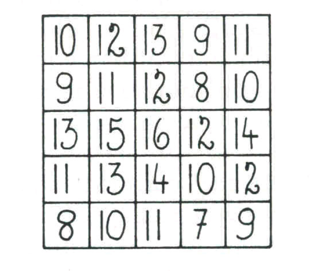
Tabii Rendrag geleneklere uyarak yanıtları bir sonraki sayıya bırakmıştı.
BLABBAGE’IN KARAR PARADOKSU
18. Bulmaca’da tanıştığımız Profesör Charles Blabbage yirmi yıllık çalışmanın ardından nihayet meşhur karar öngörme makinesini tamamlamıştı. Ayrıntıları anlatılmayacak kadar teknikti tabii ama özünde aygıtın yaptığı insan beynini üç karşılıklı dikey nötrino ışınıyla taramaktan ibaretti. Kafatası içindeki tüm elektriksel faaliyetler bu sayede son derece güçlü bir bilgisayar tarafından analiz ediliyordu. Bir kimse karşılıklı iki münhasır kararla, yani aynı anda doğru olamayacak iki seçenek arasında karar vermekle yüz yüze geldiğinde makine o kişinin hangi kararı alacağını şaşmaz bir hassaslıkla öngörebiliyordu.
Profesör Blabbage aylardan beri Robert Zonick adlı sevimli bir denekle çalışıyordu. Tüm öngörülerde ortalama yüzde doksan sekiz başarı elde etmişti.
“Sana bugün yeni ve ilginç bir test hazırladım, Bob,” dedi Profesör. “Gördüğün gibi masanın üzerinde biri saydam, diğeri saydamsız (opak) iki kutu duruyor.”
Bob masada her zamanki yerini alırken başıyla onay verdi. Blabbage üç nötrino yayıcısını Bob’un kafasına yaklaştırdı, birini alnının, diğerini kafasının tepesinin ve üçüncüsünü de sol şakağının birkaç santim uzağına yerleştirdi.
“Görebildiğin üzere,” diye devam etti Blabbage, “saydam kutunun içinde yüz dolarlık bir banknot var.”
“Ya ötekinde?” dedi Bob parmağıyla işaret ederek.
“Şimdilik boş,” dedi profesör. “İzin verirsen açıklayayım.” Kol saatine baktı. “Tam bir saat sonra sana iki seçenekten birini seçmeni söyleyeceğim. Ya sadece saydamsız kutuyu ya da iki kutuyu birden seçeceksin. Makinem sadece saydamsız kutuyu alacağını öngörürse, o kutunun içine bir milyon dolarlık bir çek koyacağım. Para senin olacak.”
“Şahane!” diyerek sırıttı Bob. “Sevdim bu testi!”
“Ancak makinem iki kutuyu birden alacağını öngörürse saydamsız kutuya hiçbir şey koymayacağım. Tabii yüz doları alman garanti.”
Profesör Blabbage bir düğmeye bastı ve makine birkaç saniyeliğine vınladı. Ardından saydamsız kutuyu alıp odadan çıktı. Yarım saat sonra geri geldi ve kutuyu, saydam kutunun yanına bıraktı.
“Bilgisayar hangi kararın daha muhtemel olduğunu belirledi,” dedi. “Ama sen biraz daha, dikkatle düşün. Ha, karar verirken iki kutuya da dokunmaman gerekiyor elbette. Her şey kayda alınıyor. Saydamsız kutu şu anda boşsa, yirmi dakika sonra da boş olacak. İçinde çek varsa, açtığın anda senin olacak. İyi şanslar, dostum.”
Blabbage çıktıktan sonra Bob bir süre kutulara baktı. “Bu lanet makineyle yüz ayrı teste girdim,” diye söylendi. “Neredeyse her seferinde haklı çıktı. Yani saydamsız kutuyu almalıyım. Çeki kapma olasılığım 1’e 9’dan iyi. Diğer yandan…”
Bob birden iki kutuyu birden almasını sağlayacak, aynı oranda iyi hatta daha bile iyi bir başka mantık yürütme bulunduğunu fark etti. Neydi peki sizce fark ettiği?
ALEF-SIFIR OTELİ’NDE HİÇ BOŞ ODA YOK
Evrenimizde muazzam ancak sonlu sayıda yıldız, haliyle bu sayıdan daha fazla ama gene sonlu miktarda gezegen bulunuyor. Bu gezegenler üzerinde yaşayan akıllı canlı sayısı, gezegen sayısından da fazla ama sonuçta bu sayının da sınırı var.
Ancak tıpkı bu kitabın iki-boyutlu sayfalarının üç-boyutlu dünyamızda yan yana yer almaları gibi, daha yüksek bir uzay-zamanda yan yana uzanan sonsuz sayıda evren mevcut. Samanyolu galaksisinin ortasındaysa bir kara delik dönüp duruyor. Bu kara deliğin tekilliğindeki bir açıklıksa doğrudan, uzayın dördüncü boyutu boyunca devasa bir solucan misali uzanarak sonsuz sayıdaki paralel evrenlere geçiş sağlayan Kara Geçit’e çıkıyor. Kara Geçit’teyse son derece lüks Alef-Sıfır Oteli yer alıyor.
Otel epey büyük. Daha doğrusu sonsuz sayıda odaya sahip. Oda numaraları 1, 2, 3, 4, 5, vesaire diye sonsuza dek gidiyor. Otel, Kara Geçit vasıtasıyla erişilebilen sonsuz sayıdaki paralel evrenlerdeki akıllı canlıların en tuttuğu tatil yerlerinden biri.
Bir keresinde, Alef-Sıfır Oteli’nin tüm odaları doluyken, Andromeda’dan gelen bir uzay gemisinden bir yaratık indi. Otele girdi ve yüksek sesle oda talep etti.
Kanguru dediğimiz canlıyı biraz andıran resepsiyon görevlisi, “Rezervasyon yaptırmış mıydınız?” diye sordu.
Dünyadan bildiğimiz herhangi bir şeye hiç mi hiç benzemeyen yaratık, “Yaptırmadım,” dedi. “Yaptırmam gerektiğini bilmiyordum. Alef-sıfır sayıda odanız yok muydu burada sizin?”
“Var elbette,” dedi görevli. “Ama şu anda hepsi dolu.”
Yaratık, bizim cüzdan dediğimizin eşitinden bin georgluk bir banknot çıkardı. “Belki bu bana bir oda ayarlamanıza yardım eder.”
Kimsenin bakıp bakmadığını kontrol eden kanguru banknotu çarçabuk cebine atıverdi. “Size bir oda bulabileceğime inanıyorum,” diye fısıldadı.
Görevli hiçbir müşteriyi otelden çıkarmadan veya odalardan birini paylaştırmadan nasıl oda bulabilecekti acaba?
DÜNYA’NIN ORTASINDAN GEÇEN TÜNEL
Yirmi üçüncü yüzyılda Kuzey Kutbu ile Güney Kutbu’ndaki mega-kentleri birleştirmek amacıyla Dünya’nın ekseni boyunca inşa edilen devasa kütle-çekim tünelinin çapı 20 metreydi. Tünelde yolcu ve malzeme taşıyan silindirik araçlar kullanılıyordu. Sürtünme tünel içinde sürekli vakumla ve araçları tünel duvarlarından uzak tutmada kullanılan manyetik alanlarla ortadan kaldırılıyordu. Bir kutuptan diğerine yolculuk 42 dakikadan azıcık daha fazla sürüyordu.
Tünelle ilgili aşağıdaki sorulardan kaçına yanıt verebilirsiniz acaba?
1) Bir araç Kuzey Kutbu’ndan Dünya’nın merkezine ilerlerken hızı artar mı, azalır mı yoksa sabit mi kalır?
2) Aracın ivmesi artar mı, azalır mı yoksa sabit mi kalır?
3) Bindiğiniz araç dünyanın merkezine giderken tam ortada durursa ağırlığınız yeryüzünde bir tartıya çıktığınızdakinden daha mı fazla yoksa daha mı az olur?
4) Yolun hangi noktasında sıfır çekime maruz kalırsınız?
5) Araç azami hızına hangi noktada erişir ve hangi hızla gider?
6) Bir araç Ay’daki benzer bir tünelden aşağı bırakılsa yolculuğu 45 dakikadan uzun mu sürer, kısa mı?
7) Dünya’nın kabuğunda derin bir çukur açma girişimini konu alan ünlü bir bilimkurgu öyküsü vardır. Öyküde Dünya’nın canlı bir organizma olduğu ortaya çıkar ve derisinin delinmesi Dünya’yı acıyla bağırtır. Bu öykünün adını ve yazarını biliyor musunuz?
YEŞİL RAKAMLARIN DANSI
Gecenin kör saatinde elimde cep hesap makinem, rakam problemleriyle uğraşıyordum. Makinemin ekranındaki ışık-yayıcı diyotlar, ayrı bağlantılı yedi çubuktan oluşan aşağıdaki düzene sahip rakamları yemyeşil gösteriyordu.
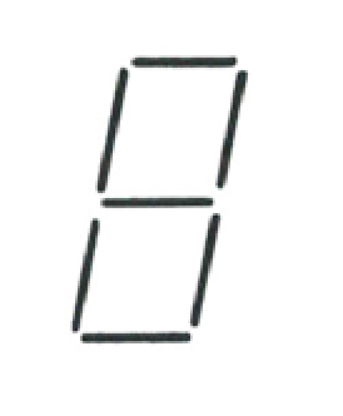
Nihayet sabaha karşı üçte yattım ve tuhaf bir düş gördüm. Hepsi insan boyunda ve hayaletsi yeşil parıldayan on rakam yatak odama dalıp dans etmeye başladılar. Grubun lideri, müteveffa komedyen Zero Mostel’e fena benzeyen Sıfır’dı.6
6) Zero: Sıfır. (ç.n.)
Sıfır, gayet bas bir tonlamayla şarkı söyleyerek, “Bu gece sizi alışılmadık rakamsal tuhaflıklarla eğlendireceğiz,” diye lafa girdi. “İlk sayımız ben hariç hepimizi kullanan en büyük kare… Yani 30.384’ün karesi.”
Dokuz rakam dans ederek şu sıraya dizildiler:
923.187.456
“Neşeli dostlarıma ben de katılırsam,” diye devam etti Sıfır, “o zaman en büyük kare şu oluyor.” Rakamlar neşeyle kıkırdayıp dans ederek şu düzene geçtiler:
9.814.072.356
“Bu, 99.066’nın karesidir,” buyurdu Sıfır. “Üstelik sayıyı baş aşağı edince de aynı sayı çıkıyor.” Sıfır parmaklarını şaklatır şaklatmaz rakamlardan yedisi sıradan ayrılarak 9, 0 ve 6’yı yalnız bıraktılar. Derken inanılmaz bir şey oldu. Birden 9 ve 6’nın birer ikizi ortaya çıktı ve 0’ın iki yanında durarak 99.066 oldular. Ardından dokuzlarla altılar yer değiştirip amuda kalkarak gene 99.066 oldular.
“Sıradaki numaramız,” diye seslendi Sıfır, “benden mahrum karelerin en küçüğü.” Dokuz rakam sıraya dizilerek 11.826’nın karesi 139.854.276’yı oluşturdular. “Ve tabii benle birlikte en küçük.” On rakam dans ederek yeni konumlarına geçtiler ve 32.043’ün karesi 1.026.753.849’u ortaya çıkardılar.
“Şimdi daha farklı bir şey,” dedi Sıfır. Kendisi dışında kalan dokuz rakam dans ederek yeni konumlar aldılar: ikisi 28, üçü 157 ve kalan dördü 4.396’yı oluşturdular.
“Bu,” dedi Sıfır, “hiçbir rakam bir defadan fazla kullanılmadan kurulan iki ve üç haneli sayıların çarpımından elde edilebilecek en küçük sonuç. En büyüğüyse…” El çırpmasıyla rakamlar tekrar yer değiştirerek 48 x 159 = 7.632’yi oluşturdular.
“Tabii ben işe karışınca sonuçlar değişiyor,” dedi Sıfır. Rakamlar önce 39 x 402 = 15.678’i, ardından 63 x 927 = 58.401’i oluşturdular.
“Şimdi de sırada,” diye devam etti Sıfır, “gerçekten müthiş bir sayı var.” Rakamlar önce 87.021 ile 94.536’yı oluşturdular. Ardından ayrılıp bu sefer 8.210.953.476’ya dönüştüler. Sıfıra göre bu, on rakamın tümünü birden kullanarak kurulan iki beş haneli sayının çarpımından elde edilebilecek ve on rakamın tümünü birden içeren en büyük sayıydı.
Sıfır bu gösterinin ardından belden eğilerek selam verdi. Gülümseyerek, “Isaac’in bilimkurgu dergisinde yayınlayacak bulmacalar aradığını biliyorum,” dedi. “İşte eğlencelik eskilerden biri…” Rakamlar kahkahalar atarak yer değiştirip aşağıdaki sırayla dizildiler:
6.519.428.037
“Söyle bakalım,” dedi Sıfır, “nedir bu sayının olayı?”
BAGEL EVE DÖNÜYOR
Uzay gemisi Bagel, Titan’dan Dünya’ya dönerken ilkin tamirat amacıyla Ay üssüne uğramıştı. İki hafta süren çalışmaların ardından Dünya’ya yolculuğuna başladı.
Bagel’ın bilgisayar bilimleri mürettebatının başı Ronald Couth, gemi bilgisayarı VOZ ile go7 oynarken, artık on ikisine gelmiş kızı Tanya odaya girdi. “Az önce garip bir şey fark ettim, baba,” dedi Tanya. “Ön taraftaki pencerelerden birinden Dünya’yı seyrediyordum. Sonra arka tarafa gidip Ay’a baktım. İkisi de tamamen aynı büyüklükte görünüyordu!”
7) Çin kökenli bir strateji oyunu. (ç.n.)
Albay Couth gülümsedi. “Rotamız üzerinde bunun gerçekleşebileceği tek nokta olduğunu biliyorsun elbette. Noktanın yerini bulmak iyi bir geometri alıştırması olur… Problemi sadeleştirmek adına, ilgili boyutları yuvarlayalım derim. Mesela Dünya’nın merkeziyle Ay’ın merkezi arasındaki mesafe 240.000 mil olsun. Dünya’nın çapına 8.000, Ay’ınkine de 2.000 mil diyelim. Ne dersin, Ay’ın merkezinden ne kadar uzaktayız, bulabilecek misin?”
Geometri problemlerine bayılan Tanya için bu soru hiç de zor değildi.